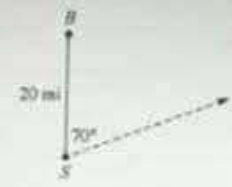
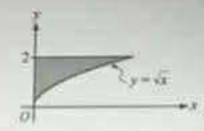
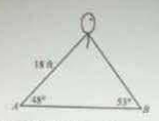
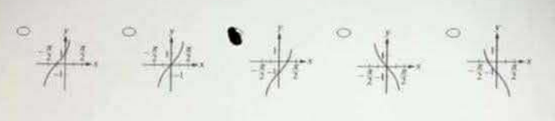
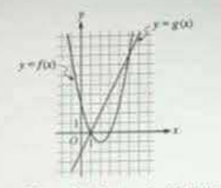
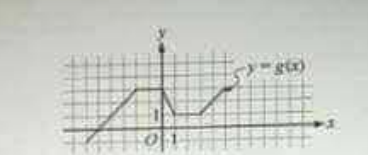
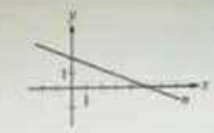
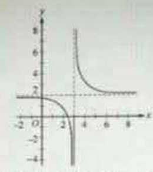
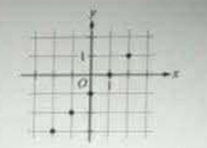
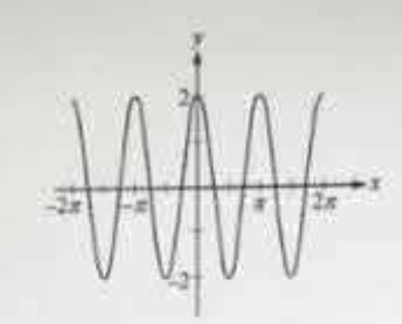

If f(x) = x³ − 2x and g(x) = 4x, which of the following is equal to fg(x) for x ≠ 0?
A ship, located at point S, is 20 miles due south of a buoy at point B. The ship sails at 16 miles per hour along a straight course that is 70° east of north. After 5 hours, what is the distance, in miles, between the ship and the buoy?

The shaded region in the figure is bounded by the y-axis, the line y = 2, and the curve y = x. If a point lies in the interior of the shaded region with coordinates (x, y), which of the following must be true?

I. x < 4
II. x < y
III. x < y
If log4 x = 32, what is the value of x?
If a ≥ 0, then a³ · a⁶
If w, x, and y are positive numbers, then 32wx²y 2w²x⁶ =
Let the function f be defined by: f(x) = ⎧ 1x−2 if x ≤ 1 x² − 4 if x > 1
What is the value of f(3) + f(−3)?
Which of the following is an equation of the line in the xy-plane that is parallel to the y-axis and passes through the point (5, −2)?
A balloon floats above and between two points A and B on the ground. The angles of elevation from each point to the balloon are 48° and 53°, respectively, and the line-of-sight distance to the balloon from A is 18 feet. What is the distance from A to B, to the nearest foot?

If f(x) = cos²x and g(x) = sin²x, which of the following defines the function h, where h(x) = 1 for all x?
Let f be the function defined by f(x) = 4x + 12. If g(x) = 12f(2x), which of the following is an expression for the function g?
The surface area of a spherical balloon of radius r is given by f(r) = 4πr². As the balloon is inflated, the radius is given by g(t) = 3tt + 1, where t represents inflation time. Which of the following best describes the composite function f ∘ g?
The temperature, in °F, of a room t hours after midnight varies according to T(t) = A sinπt12 + B, where A and B are positive constants. The maximum temperature is 70°F and the greatest difference in temperature is 10°F. What is the value of B?
Manuel drove a distance of 100 miles for a trip. At first there was little traffic and his average speed for the first part of the trip was 60 miles per hour. For the rest of the trip, the traffic was heavy and his average speed was only 40 miles per hour. If n is the number of miles that Manuel drove before encountering heavy traffic, which of the following functions T gives the total number of hours that Manuel drove?
Which of the following could be a portion of the graph of the function f(x) = −1 + tan x?

[Five graph options displayed on original exam — the third option (graph shifted down 1 unit) is correct.]
9y² − 4x² + 18y + 8x = 31 Which of the following is the graph in the xy-plane of the equation shown?
The angle θ is in standard position. If cos θ > 0 and tan θ < 0, which of the following is true?
The figure shows the graphs of the quadratic function f and the linear function g. What are all the x-intercepts of the graph of y = f(x) − g(x)?

Which of the following are trigonometric identities?
I. sin xcos y = tanxy
II. cos(−t) = −cos(t)
III. sin(x²) = (sin x)²
What is the least value of x that satisfies the equation 3x² + 13x − 10x + 7 = 0?
The figure shows a portion of the graph of a function g. If h is the function such that g(x) = h(x + 3) for all values of x, what is the y-intercept of the graph of h?

x + y = 1
2x − 3y = 3
If the ordered pair (x, y) is the solution to the system above, what is the
value of x − y?
Which of the following is equal to |2π - 10|+|9 - 4π|?
(IMAGE WAS NOT CLEAR)
The graph of line n is shown above. Which of the following is an equation of the line that is parallel to n and contains the point (2, −3)?

If f(x) = 2cos(3x), then fπ18 =
Which of the following trigonometric functions has the greatest period?
When a certain company sells n items, its total sales revenue is modeled by R(n) = −(n − 30)² + 1,200. What is the average rate of change of the total sales revenue when the number of items sold increases from 20 to 26?
f(x) = mx + 10 g(x) = kx − 10 For the functions above, m and k are constants where m < 0 and k > 0. If the graphs intersect at the point (6, 3), what are all values of x such that f(x) < g(x)?
If f(x) = x − 3 + 4, then f⁻¹, the inverse function of f, is defined by which of the following?
If f(x) = x² − x, then f(x + 2) − f(x)2 =
The figure shows the graph of a function g in the xy-plane. Which of the following could define g?

Which of the following is in the domain of the function f given by f(x) = log[(x + 3)(2x − 7)(3x − 25)]?
What are the solutions to the equation sin³θ cosθ + sinθ cos³θ = 14 on the interval [0, π2]?
N(t) = 4 + (t² − 2t)e−0.5t, where 0 ≤ t ≤ 10
The function N models the squirrel population (in hundreds) in a wooded area over 10 years, where t = years after January 1, 1990. Between which years was the squirrel population at its maximum?
Let f be a one-to-one function with domain (−∞, ∞). The point (a, b) is on the graph of y = f(x), where a and b are nonzero real numbers. Which of the following points must be on the graph of the inverse function y = f⁻¹(x)?
If sin θ = −513 and π < θ < 32π, which of the following has the least value?
In the xy-plane, the axis of symmetry of a parabola is the line x = 2. The parabola intersects the x-axis when x = −1. Which of the following could be an equation of the parabola?
The range of the function f is {y : 0 ≤ y ≤ 2}. If g(x) = f(x − 5) + 10, what is the range of the function g?
Which of the following is an equation of the line in the xy-plane that passes through the x- and y-intercepts of the graph of (x − 3)² + (y − 3)² = 9?
If −7x + 5 = 2x − b, which of the following expresses x in terms of b?
The cost of a container of liquid shaped as a rectangular box with interior dimensions 2.5 × 4 × 8 inches is $1.25. If cost is directly proportional to volume, what is the cost of a container with interior dimensions 4 × 10 × 12 inches?
|x − m| < 2 If m > 0 in the inequality above, which of the following CANNOT be the value of x?
f(x) = 10 sin(x²)x² + 1 There are two values of x at which the function f attains its absolute maximum value. What is the distance between the two corresponding maximum points on the graph of f in the xy-plane?
The figure shows the graph of the function f whose domain is {−2, −1, 0, 1, 2}. What is the set of all values of x such that |f(x)| < 2?

If f(x) = sin(3x), then f(f(x)) =
What are all values of x for which 2 < 10x < 5?
Let f be the function defined by f(x) = 9x − 4. If h ≠ 0, then f(2 + h) − f(2 − h)2h =
Which of the following could be an equation of the graph shown above?
